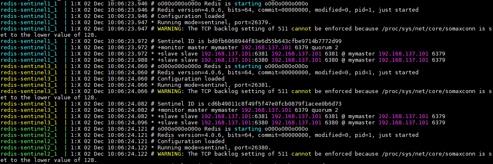
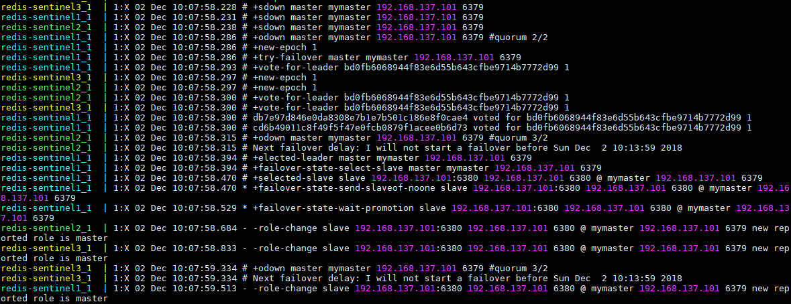

Redis Sentinel이란?
Redis Cluster 운영환경에서 Master-Slave 관계를 가진 Redis가 있습니다.
시스템 오류나 알수 없는 원인으로 인해 Master Redis가 down되어 연결이 중단 되면, 사용자나 Application에서는 Redis Master를 통해 데이터를 등록 할 수 없게 됩니다.
이런 경우 Slave Redis를 Master Redis로 승격시켜 시스템이 정상적으로 운영 될 수 있도록 해야 합니다.
이 때 사용하는 게 Redis Sentinel입니다.
Sentinel은 Master Redis의 상태를 감시합니다. 그러다가 Master Redis가 Down이 되어버리면, Sentinel들은 Slave Redis들 중에 어떤 Redis 서버를 Master로 승격시킬지 투표하게 됩니다.
Slave Redis 중 Sentinel의 투표를 더 많이 받은 Redis Server가 Master Redis로 승격됩니다.
이후 장애를 해결한 원래 Master Redis는 재시작 시, 현재 Master Redis의 Slave Redis로 시작되게 됩니다.
이와같이, Redis Sentinel은 Redis Cluster 환경에서의 Failover를 자동으로 해주는 Redis의 한 Mode입니다.
Role Change 원리

위의 상황은 6379 포트를 사용하는 Master Redis가 Down된 상황입니다.
Sentinel들은 일제히 Master Redis를 감시하다가 Down된 상황을 인지하고
2번째 그림처럼 Slave Redis들 중 어떤 Redis 서버를 Master Redis로 승격할 지 투표로 정하게 됩니다.
여기서 중요한 건 Redis Sentinel의 노드 갯수는 항상 홀수로 설정해야 합니다. (짝수 인 경우 1:1, 2:2 상황이 되어 어떤 Redis Server를 승격 시킬지 알 수 없기 때문입니다.)
위의 예제에서는 15485 번 포트를 사용하는 Slave Redis가 2대1로 선택되었습니다.
Sentinel은 바로 redis.conf 파일을 조작하여 Slave Redis를 Master Redis로 변경합니다.
그리고 자기 자신의 sentinel.conf 정보를 조작하여 감시하는 Redis 서버 정보를 update 합니다.
이후 Down되었던 기존의 Master Redis의 장애가 처리되어 Restart되는 경우를 보도록 하겠습니다.

Sentinel은 Down되었던 Master 정보를 메모리에 저장하고 있습니다.
이후 Down되었던 Master Redis가 장애를 처리하고 다시 시작 되는 경우, Master Redis의 redis.conf 파일을 조작하여
현재 Master Redis의 Slave로 설정합니다.
이 경우 Sentinel의 설정 값이 따라 다르지만,
일시적으로 Master Redis가 2대가 됩니다.
만약에 Down 되었다가 Restart된 Redis에 Data가 저장되는 경우, Slave Redis로 전환되면서 Master의 rdb파일을 바탕으로 Data를 Update하기 때문에 데이터가 사라지는 상황이 오게 됩니다.
따라서 Down 되었다가 살아나는 Redis에 접근 하지 못하도록 막아야 합니다.
Redis Sentinel 설치하기
Docker, Docker-Compose, git은 Redis Cluster를 설치하며 설치 했다고 가정하겠습니다.
Redis Sentinel 파일 다운로드
기존에 github에 올려둔 Sentienel 설정파일을 다운로드 합니다.
1 |
|
Redis sentinel Build
1 | cd /home/redis/redis-sentinel |
Redis Sentinel 생성을 위한 docker-compose.yml파일
1 |
|
Redis Sentinel 이미지 생성을 위한 Dockerfile 작성
1 | #redis-sentinel 이미지 기반으로 빌드합니다. |
Redis Sentinel 설정
1 |
|
Redis Sentinel 실행 결과
1 | docker-compose -f conf/sentinel-docker-compose.yml up --build -d |

sentinel 1~3 까지의 로그를 모아보았습니다.
테스트용 port인 (6379~6381) 에 대한 master/slave 정보를 가지고 있는것을 볼수 있습니다.
로그처럼
1 | redis-sentinel2_1 | 1:X 02 Dec 10:06:24.082 # +monitor master mymaster 192.168.137.101 6379 quorum 2 |
sentinel이 자신의 마스터에 대한 정보를 가지고 모니터 하며 quorum 2를 가지고 있는 것을 볼 수 있습니다.
Failover Test
자, Failover를 구성 했으니 실제로 Master를 한번 죽여보도록 해보겠습니다.
1 | docker stop <master_node_id> # Redis Master Container를 중지 |

맨 처음 로그를 살펴보면 각 sentinel 노드에서 sdown 시그널을 발생시키고 있습니다.
중간정도 줄을 보면
1 | +odown master mymaster 192.168.137.101 6379 #quorum 3/2 |
라는 로그가 나오게 되는데 3개의 sentinel에서 모두 sdown으로 인지하게 되는것입니다.
3/2의 뜻은 2개 노드에서 sdown이 발생 했을 때, odown 판정을 내린다는 다수결 투표 숫자입니다.
그런데 3개의 노드가 모두 투표를 하여 과반수 이상이 되었으므로 192.168.137.101 6379인 Redis 노드는 odown상태가 되었습니다.
그 바로 다음 줄 부터 failover 작업이 시작됩니다.
위의 예제에서는 6380 포트를 사용하는 redis노드가 새로운 마스터로 선출 되었습니다.
따라서 6380 포트를 사용하는 redis노드는 master로 role-change가 되면서 master 노드로써 역할을 수행하게 됩니다.
이렇게 Redis Sentinel을 이용하여 master node를 감시하며, 장애 상황에 대한 failover를 지원하고 있습니다.
sdown vs odown
Sentinel에서 down을 판단하는 방법은 sdown과 odown으로 이루어집니다.
failover 시 Master가 죽었다는 걸 판단하기 위해서는 다수결의 원칙이 적용됩니다. (그래서 Sentinel노드 갯수를 홀수로 설정하는 이유입니다.)
먼저, Master가 죽게 되면 Sentinel은 자신이 감시하고 있는 Master가 죽었다고 sdown 시그널을 표현합니다 (Subjective Down 이라 합니다.)
sdown은 단지 Master와 Sentinel 자기 자신이 연결이 되지 않음을 의미합니다.
위에서 보듯이 Master가 죽었으니 다른 Sentinel들도 연결이 끊어졌다고 sdown 시그널을 보냅니다.
그렇게 되면 다수결에 원칙에 따라 quorum값 만큼의 sdown이 발생하면 sentinel은 odown 시그널을 보냅니다. (Objective Down이라 합니다.)
odown은 다수결에 의해서 명시적으로 Master가 Down되었다고 선포하는 것과 같습니다.
그렇게 되면 Sentinel들은 다음 Master를 선출하기 위해 남아있는 Slave Redis들에게 투표를 하게 됩니다.
다수결의 원칙으로 더 많은 투표수를 받은 Slave가 Master로 선출되게 됩니다.
중단되었던 6379 포트를 사용하는 Redis 노드가 살아나면?
아까 stop했던 container를 다시 살려보겠습니다.
1 | docker start <redis1_node_id> |

3번째 줄부터 보시면, sentinel에서 -sdown 로그를 찍어주고 있습니다.
sentinel에서 연결되지 않았던 6379번 노드에 대해 정상적으로 커넥션이 맺어지고 있기 때문입니다.
중간 줄 부터 보게 되면다른 sentinel 노드에서도 -sdown 로그를 찍어주며 6379번 노드에 대한 부활을 알려주고 있습니다.
그런 다음에 +convert-to-slave 로그를 보면, 기존의 6379번 노드는 원래 master role을 수행 하던 Redis 노드였습니다.
하지만 현재 sentinel에 대한 mymaster는 6380번 노드이기 때문에 6379번 노드는 master role을 수행 할 수 없습니다.
따라서 +role-change 명령을 통해 기존에 master role -> slave role로 변경되어야 합니다.
그리고 현재 master role 권한이 있는 6380번 노드의 slave으로 편입되게 됩니다.
redis-cli를 통해 6379번 노드에 접속하여 info replication 명령을 날려보았습니다.

현재 role은 slave 이며, 6380번 노드를 master로 설정하고 있습니다.
왜 기존의 master가 살아나면, slave로 전환하여 사용해야 할까?
이유는 간단합니다.
Redis Master-Slave간 데이터 Replication을 이해 하면 쉽게 이해 할 수 있습니다
Redis의 데이터 Replication은 dump.rdb파일을 통해 이루어지는데,
master노드 만 dump.rdb파일에 데이터를 write 할 수 있습니다.
slave노드에서는 dump.rdb파일을 읽어서 데이터 replication을 하게 되는데,
만약 기존의 master의 role이 유지된다면, dump.rdb파일을 조작하여 기존의 master가 다운된 시간 동안
들어온 데이터가 삭제될 수 있습니다.
그렇게 때문에 데이터 정합성을 위해 기존의 master는 slave로 role이 전환되어야 합니다.